2.Mashindano ya kukimbia yalianza saa 3 na dakika 45 asubuhi na kumalizika saa 6 na dakika 25 mchana. Mashindano hayo yalitumia muda gani?3.Zakaria alitumia muda wa dakika 45 kutoka nyumbani kufika shuleni. Ikiwa aliondoka nyumbani saa 12:30 asubuhi kwenda shuleni, andika muda aliofika shuleni katika mtindo wa saa 24. 4.Wachezaji walitumia muda wa saa 1 na dakika 30 kucheza mpira. Ikiwa walianza kucheza saa 12:00 jioni, je, walimaliza kucheza mpira saa ngapi?5.Mwanafunzi alifika shuleni saa 12:15 asubuhi akiwa amechelewa dakika 15. Je, mwanafunzi huyo alitakiwa kufika shuleni saa ngapi?6.Zuhura ni mtunza muda shuleni. Hugonga kengele kila baada ya dakika 40. Iwapo aligonga kengele saa 2:40 asubuhi, je, atagonga tena kengele saa ngapi? 7.Mtihani ulianza saa 3:15 asubuhi na kumalizika saa 6:15 mchana. Mtihani huo ulifanyika kwa muda gani?8.Kipindi cha somo la Hisabati cha dakika 40 kilimalizika saa 5:20. Kipindi hicho kilianza saa ngapi?9.Basi liliondoka stendi kuu ya Tanga saa 0600 na kufika Dodoma saa 1745. Basi lilisafiri kwa muda gani kutoka Tanga kwenda Dodoma? 10.Vanesa alifika shuleni saa 12:15 asubuhi akiwa amewahi kwa saa 1:45. Alitakiwa afike shuleni saa ngapi? 11.Ndege ilisafiri kutoka Dar es salaam saa 0045 na kufika Mwanza saa 0145. Je, ndege ilitumia muda gani katika safari hiyo?